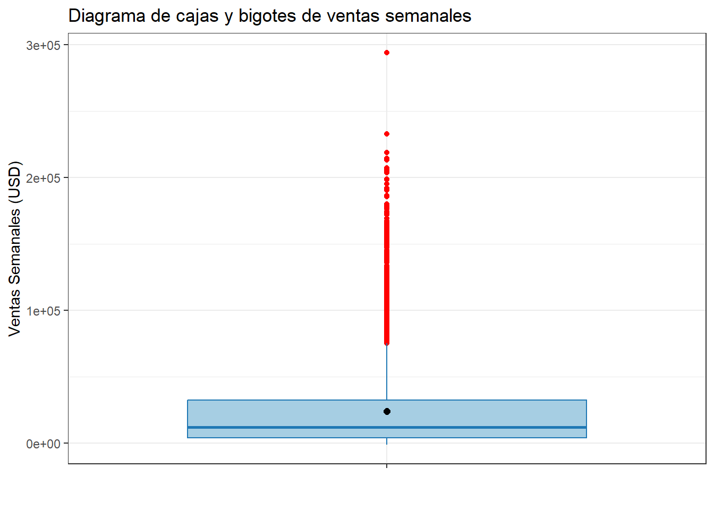
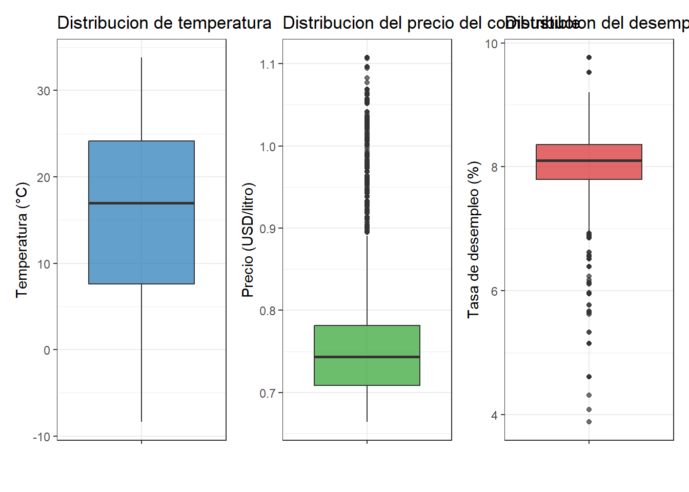
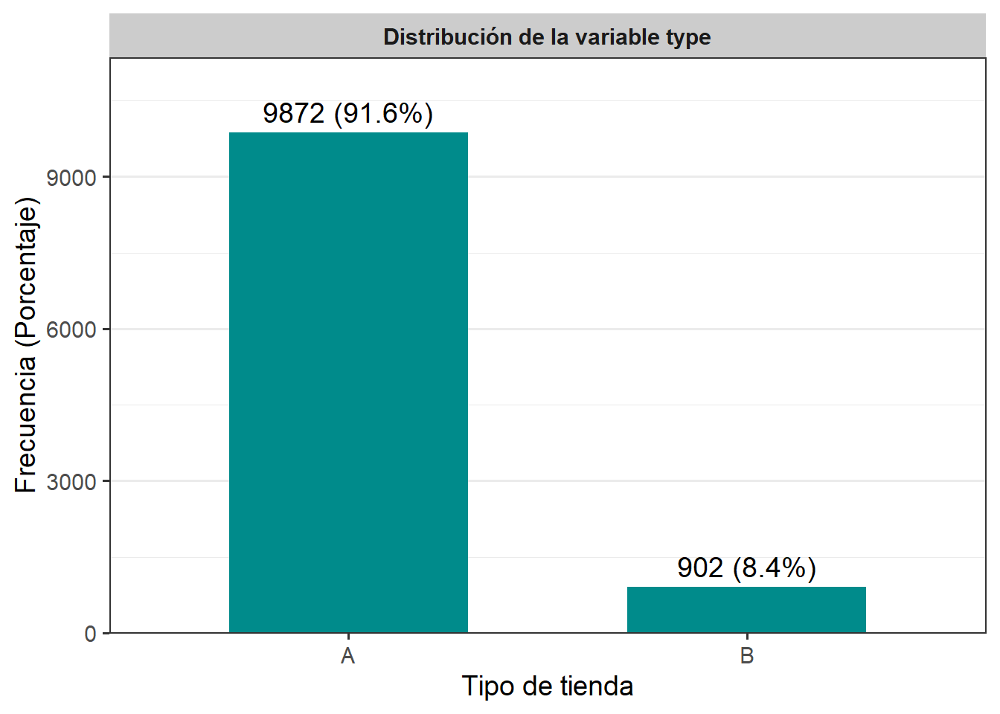
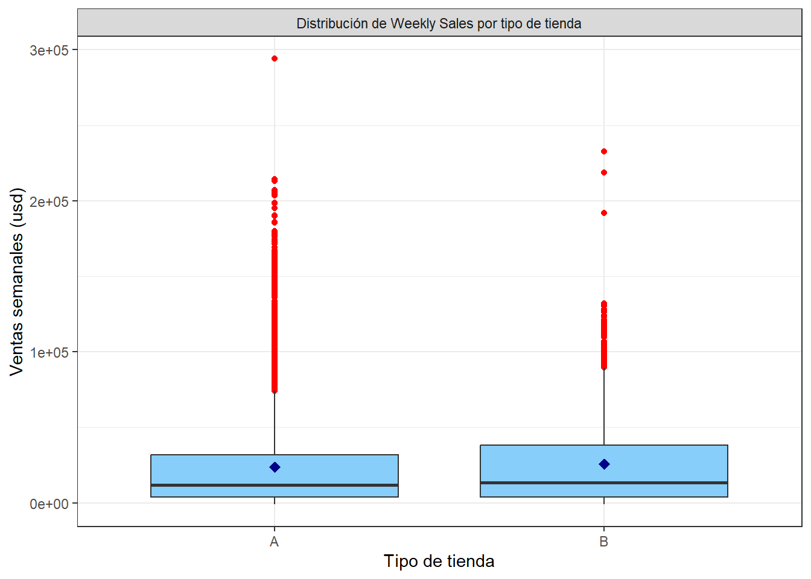
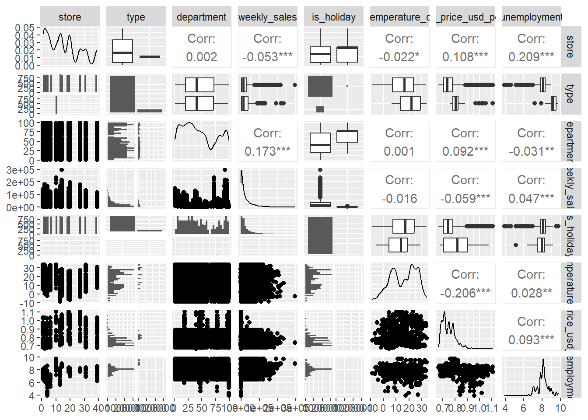

Capítulo 3 Análisis exploratorio de datos (EDA)
Figura 3.1: Análisis exploratorio de datos (EDA)
El Análisis Exploratorio de Datos (Exploratory Data Analysis, EDA por sus siglas en inglés) es una etapa fundamental del proceso estadístico que consiste en utilizar gráficos, visualizaciones y resúmenes numéricos para examinar un conjunto de datos.
Su propósito principal es explorar, descubrir patrones, identificar anomalías y formular posibles hipótesis, sin realizar inferencias estadísticas formales. El EDA busca comprender la estructura de los datos y generar ideas, más que confirmar hipótesis previamente establecidas.
3.1 ¿Cuándo debo utilizarlo?
El Análisis Exploratorio de Datos (EDA) es una herramienta poderosa para examinar, comprender y preparar un conjunto de datos. Aunque el análisis esté orientado a hipótesis específicas, el EDA es útil en etapas previas como la limpieza de datos, la detección de errores, el análisis de subgrupos o simplemente para obtener una mejor comprensión de la estructura y comportamiento de los datos.
Uno de los pasos iniciales más importantes del EDA es la representación gráfica de los datos, que permite identificar patrones, tendencias y valores atípicos con mayor claridad.
3.1.1 Tipos de análisis exploratorio:
- No gráfico: Utiliza estadísticas descriptivas para resumir las variables numéricamente.
- Gráfico: Representa visualmente los datos mediante histogramas, diagramas de caja, gráficos de dispersión, entre otros.
- Univariado: Analiza una sola variable a la vez, observando su distribución, tendencia central y dispersión.
- Multivariado: Examina dos o más variables simultáneamente, identificando relaciones o asociaciones entre ellas.
Cada una de estas divisiones puede, a su vez, clasificarse según el tipo de variable involucrada: categórica o numérica.
3.2 Representación de datos según su naturaleza
La forma en que se representan los datos depende fundamentalmente de su naturaleza, es decir, del tipo de variable que se está analizando. Esta clasificación influye directamente en la selección de métodos gráficos y estadísticos adecuados para el análisis.
| Naturaleza.de.la.variable | Escala.de.Medidas | Frecuencias | Medidas.de.Localización | Medidas.de.Dispersión | Medidas.de.Distribución | Gráficos |
|---|---|---|---|---|---|---|
| Cualitativa | Nominal | Sí | Moda | No | No | Sectores, Barras |
| Ordinal | Sí | Moda | No | No | Sectores, Barras (sin orden) | |
| Cuantitativa | Intervalo | Agrupadas | Media, Mediana y Moda | Sí | Sí | Histograma, Tallo y hojas, Cajas y Bigotes, Dispersión |
| Razón | Sí | Sí |
3.3 Presentación y análisis de la información en estudios descriptivos
En los estudios descriptivos, la presentación y análisis de la información constituyen fases clave para comprender las características fundamentales de los datos recolectados. El objetivo principal es resumir y organizar la información de forma clara y accesible, sin realizar inferencias ni establecer relaciones causales.
| Tipo de Tabla | Tipo de Gráfico |
|---|---|
| De Frecuencia (Variable Cualitativa) |
|
| De Frecuencia (Variable Cuantitativa) |
|
| De Asociacion (Dos Variables Cualitativas) |
|
| De Asociacion (Una Variable Cualitativa y una Cuantitativa Discreta) |
|
| De Asociacion (Una Variable Cualitativa y una Cuantitativa Continua) |
|
| De Asociacion (Dos Variables Cuantitativas) |
|
3.4 Análisis explotario con variable respuesta numérica
Para el desarrollo de las visualización trabajaremos con datos sobre los almacenes Walmart, que es un cadena de grande almacenes de Ewa.

Figura 3.2: Tienda Walmart
El conjunto de datos completos lo puede encontrar este link. Trabajaremos un subconjunto de datos contiene las ventas semanales en dolares, cada tienda tiene un número de identificación y un tipo de tienda específico, las ventas estan separadas por ID de departamento. Junto con las ventas hay variables como si fue de vacaciones o no, la temperatura media durante la semana en esa localidad, el tiempo medio del combustible en dolares por litro esa semana y la tasa de desempleo de esa semana.
3.4.1 Contexto de los datos de Walmart
Aquí tienes una explicación de las variables en el conjunto de datos de ventas proporcionado:
Unnamed: Columna de índice que parece haber sido incluida al guardar el archivo. No es una variable significativa.
store: Identificador del número de la tienda.
type: Tipo de tienda, representado por una letra (por ejemplo, “A”, “B”, etc.). n
department: Identificador del número de departamento dentro de la tienda.
date: Fecha en la que se registró la venta.
weekly_sales: Ventas semanales en USD registradas en esa tienda y departamento específicos (
Target).is_holiday: Variable booleana que indica si la fecha corresponde a un día festivo o no. Los valores son “True” o “False”.
temperature_c: Temperatura en grados Celsius en la fecha registrada.
fuel_price_usd_per_l: Precio del combustible en dólares estadounidenses por litro en la fecha registrada.
unemployment: Tasa de desempleo en la fecha registrada.
Iniciaremos el análisis exploratorio de los datos de Walmart
3.4.2 Extracción, transformación y carga (ETL)
- Carguemos el conjunto de datos:
Code
- Verifiquemos que leímos bien los datos viendo el encabezado y la cola de los datos:
## X store type department date weekly_sales is_holiday temperature_c fuel_price_usd_per_l unemployment
## 1 0 1 A 1 2010-02-05 24924.50 False 5.727778 0.6794508 8.106
## 2 1 1 A 1 2010-03-05 21827.90 False 8.055556 0.6934520 8.106
## 3 2 1 A 1 2010-04-02 57258.43 False 16.816667 0.7182841 7.808
## 4 3 1 A 1 2010-05-07 17413.94 False 22.527778 0.7489281 7.808
## 5 4 1 A 1 2010-06-04 17558.09 False 27.050000 0.7145857 7.808Las dimensiones, los nombres de las columnas y la estructura de la base de datos se obtienen con los códigos:
## [1] 10774 10## [1] "X" "store" "type" "department"
## [5] "date" "weekly_sales" "is_holiday" "temperature_c"
## [9] "fuel_price_usd_per_l" "unemployment"## 'data.frame': 10774 obs. of 10 variables:
## $ X : int 0 1 2 3 4 5 6 7 8 9 ...
## $ store : int 1 1 1 1 1 1 1 1 1 1 ...
## $ type : chr "A" "A" "A" "A" ...
## $ department : int 1 1 1 1 1 1 1 1 1 1 ...
## $ date : chr "2010-02-05" "2010-03-05" "2010-04-02" "2010-05-07" ...
## $ weekly_sales : num 24925 21828 57258 17414 17558 ...
## $ is_holiday : chr "False" "False" "False" "False" ...
## $ temperature_c : num 5.73 8.06 16.82 22.53 27.05 ...
## $ fuel_price_usd_per_l: num 0.679 0.693 0.718 0.749 0.715 ...
## $ unemployment : num 8.11 8.11 7.81 7.81 7.81 ...- Eliminemos la variable
Xydate, ya que no estan en nuestra investigación:
## store type department weekly_sales is_holiday temperature_c fuel_price_usd_per_l unemployment
## 1 1 A 1 24924.50 False 5.727778 0.6794508 8.106
## 2 1 A 1 21827.90 False 8.055556 0.6934520 8.106
## 3 1 A 1 57258.43 False 16.816667 0.7182841 7.808
## 4 1 A 1 17413.94 False 22.527778 0.7489281 7.808
## 5 1 A 1 17558.09 False 27.050000 0.7145857 7.808- Identifiquemos los valores
NApor columna:
## NA_store NA_type NA_department NA_weekly_sales NA_is_holiday NA_temperature_c NA_fuel_price_usd_per_l
## 1 0 0 0 0 0 0 0
## NA_unemployment
## 1 0- Otra forma de hacerlo es:

3.4.3 Análisis de la variable weekly_sales (Target)
- Consideremos el resumen de la
weekly_sales:
Code
## n media ds mediana minimo maximo Q1 Q3 IQR
## 1 10774 23843.95 30220.39 12049.06 -1098 293966 3867.115 32349.85 28482.73La variable weekly_sales fue analizada a partir de 10.774 observaciones. Se obtuvo un promedio de ventas semanales de aproximadamente \(23.843,95\) usd (DS = \(30.220,39\) usd), donde El \(50\%\) de las ventas semanales se encuentran por debajo de \(12.049,06\) usd. El mínimo registrado fue de \(-1.098\) usd, lo que indica que en ciertas semanas se presentaron saldos negativos de ventas, posiblemente debido a devoluciones de productos, ajustes contables o cancelaciones, situaciones comunes en grandes cadenas minoristas como Walmart. Por su parte, el máximo alcanzó los \(293.966\) usd, lo cual refleja una alta heterogeneidad entre tiendas o departamentos.
- Veamos un histograma
Code
df %>%
ggplot(aes(x = weekly_sales)) +
geom_histogram(aes(y = after_stat(density)),
binwidth = 5000,
fill = "#2c7fb8",
color = "white",
alpha = 0.6) +
geom_density(color = "darkblue", linewidth = 1.2) +
labs(
title = "Distribución de Ventas Semanales",
x = "Ventas Semanales (USD)",
y = "Densidad"
) +
theme_bw()
- Veamos un diagrama de cajas y bigotes
Code
df %>%
ggplot(aes(x = "", y = weekly_sales)) +
geom_boxplot(fill = "#a6cee3", color = "#1f78b4", outlier.color = "red") +
stat_summary(
fun = mean,
geom = "point",
shape = 20,
size = 3,
color = "black"
) +
labs(
title = "Diagrama de cajas y bigotes de ventas semanales",
x = "",
y = "Ventas Semanales (USD)"
) +
theme_bw()
La distribución de weekly_sales es altamente asimétrica, con fuerte concentración de valores bajos y una cantidad significativa de valores extremos altos. Esto indica que aunque la mayoría de las tiendas tienen ventas semanales moderadas, existen algunas con ventas excepcionalmente altas que influyen notablemente en los estadísticos como la media y la desviación estándar.
3.4.4 Análisis de las variables características (independientes)
Analizaremos el iniciamente las variables numéricas
Code
df %>%
summarise(
n = length(temperature_c),
media = mean(temperature_c),
ds = sd(temperature_c),
mediana = median(temperature_c),
minimo = min(temperature_c),
maximo = max(temperature_c),
Q1 = quantile(temperature_c, 0.25),
Q3 = quantile(temperature_c, 0.75),
IQR = IQR(temperature_c)) %>%
mutate(variable = "temperature_c") -> var_num_temp
df %>%
summarise(
n = length(fuel_price_usd_per_l),
media = mean(fuel_price_usd_per_l),
ds = sd(fuel_price_usd_per_l),
mediana = median(fuel_price_usd_per_l),
minimo = min(fuel_price_usd_per_l),
maximo = max(fuel_price_usd_per_l),
Q1 = quantile(fuel_price_usd_per_l, 0.25),
Q3 = quantile(fuel_price_usd_per_l, 0.75),
IQR = IQR(fuel_price_usd_per_l)) %>%
mutate(variable = "fuel_price_usd_per_l") -> var_num_fuel
df %>%
summarise(
n = length(unemployment),
media = mean(unemployment),
ds = sd(unemployment),
mediana = median(unemployment),
minimo = min(unemployment),
maximo = max(unemployment),
Q1 = quantile(unemployment, 0.25),
Q3 = quantile(unemployment, 0.75),
IQR = IQR(unemployment)) %>%
mutate(variable = "unemployment")-> var_num_unemploy
bind_rows(var_num_temp, var_num_fuel, var_num_unemploy) %>%
select(variable, everything())## variable n media ds mediana minimo maximo Q1 Q3 IQR
## 1 temperature_c 10774 15.7319782 9.92244608 16.9666667 -8.3666667 33.827778 7.5833333 24.1666667 16.58333333
## 2 fuel_price_usd_per_l 10774 0.7497458 0.05949359 0.7433805 0.6641289 1.107674 0.7082456 0.7814213 0.07317569
## 3 unemployment 10774 8.0820086 0.62435501 8.0990000 3.8790000 9.765000 7.7950000 8.3600000 0.56500000Code
library(patchwork)
# Boxplot de temperature_c
p1 <- df %>%
ggplot(aes(x="", y = temperature_c)) +
geom_boxplot(fill = "#1f77b4", alpha = 0.7) +
labs(
title = "Distribucion de temperatura",
y = "Temperatura (°C)",
x = ""
) +
theme_bw()
# Boxplot de fuel_price_usd_per_l
p2 <- df %>%
ggplot(aes(x="",y = fuel_price_usd_per_l)) +
geom_boxplot(fill = "#2ca02c", alpha = 0.7) +
labs(
title = "Distribucion del precio del combustible",
y = "Precio (USD/litro)",
x = ""
) +
theme_bw()
# Boxplot de unemployment
p3 <- df %>%
ggplot(aes(x="",y = unemployment)) +
geom_boxplot(fill = "#d62728", alpha = 0.7) +
labs(
title = "Distribucion del desempleo",
y = "Tasa de desempleo (%)",
x = ""
) +
theme_bw()
# Unir los tres gráficos en una sola visualización
p1 + p2 + p3 
La interpretación de la tabla y el gráfico quedan como ejercicio
Ahora analizaremos las variables categóricas
Code
# Tabla de frecuencias para type
tabla_type <- df %>%
count(type, name = "Frecuencia") %>%
mutate(
Porcentaje = round(Frecuencia / sum(Frecuencia) * 100, 2),
Variable = "type",
Categoria = as.character(type)
) %>%
select(Variable, Categoria, Frecuencia, Porcentaje)
# Tabla de frecuencias para department
tabla_department <- df %>%
count(department, name = "Frecuencia") %>%
mutate(
Porcentaje = round(Frecuencia / sum(Frecuencia) * 100, 2),
Variable = "department",
Categoria = as.character(department)
) %>%
select(Variable, Categoria, Frecuencia, Porcentaje)
# Tabla de frecuencias para is_holiday
tabla_holiday <- df %>%
count(is_holiday, name = "Frecuencia") %>%
mutate(
Porcentaje = round(Frecuencia / sum(Frecuencia) * 100, 2),
Variable = "is_holiday",
Categoria = as.character(is_holiday)
) %>%
select(Variable, Categoria, Frecuencia, Porcentaje)
# Unir todas las tablas
bind_rows(tabla_type, tabla_department, tabla_holiday)## Variable Categoria Frecuencia Porcentaje
## 1 type A 9872 91.63
## 2 type B 902 8.37
## 3 department 1 144 1.34
## 4 department 2 144 1.34
## 5 department 3 144 1.34
## 6 department 4 144 1.34
## 7 department 5 144 1.34
## 8 department 6 144 1.34
## 9 department 7 144 1.34
## 10 department 8 144 1.34
## 11 department 9 144 1.34
## 12 department 10 144 1.34
## 13 department 11 144 1.34
## 14 department 12 144 1.34
## 15 department 13 144 1.34
## 16 department 14 144 1.34
## 17 department 16 144 1.34
## 18 department 17 144 1.34
## 19 department 18 144 1.34
## 20 department 19 140 1.30
## 21 department 20 144 1.34
## 22 department 21 144 1.34
## 23 department 22 144 1.34
## 24 department 23 144 1.34
## 25 department 24 144 1.34
## 26 department 25 144 1.34
## 27 department 26 144 1.34
## 28 department 27 144 1.34
## 29 department 28 144 1.34
## 30 department 29 144 1.34
## 31 department 30 144 1.34
## 32 department 31 144 1.34
## 33 department 32 144 1.34
## 34 department 33 144 1.34
## 35 department 34 144 1.34
## 36 department 35 144 1.34
## 37 department 36 144 1.34
## 38 department 37 120 1.11
## 39 department 38 144 1.34
## 40 department 39 7 0.06
## 41 department 40 144 1.34
## 42 department 41 144 1.34
## 43 department 42 144 1.34
## 44 department 43 2 0.02
## 45 department 44 144 1.34
## 46 department 45 126 1.17
## 47 department 46 144 1.34
## 48 department 47 114 1.06
## 49 department 48 90 0.84
## 50 department 49 144 1.34
## 51 department 50 72 0.67
## 52 department 51 99 0.92
## 53 department 52 144 1.34
## 54 department 54 144 1.34
## 55 department 55 144 1.34
## 56 department 56 144 1.34
## 57 department 58 144 1.34
## 58 department 59 144 1.34
## 59 department 60 144 1.34
## 60 department 67 144 1.34
## 61 department 71 144 1.34
## 62 department 72 144 1.34
## 63 department 74 144 1.34
## 64 department 77 39 0.36
## 65 department 78 56 0.52
## 66 department 79 144 1.34
## 67 department 80 144 1.34
## 68 department 81 144 1.34
## 69 department 82 144 1.34
## 70 department 83 144 1.34
## 71 department 85 144 1.34
## 72 department 87 144 1.34
## 73 department 90 144 1.34
## 74 department 91 144 1.34
## 75 department 92 144 1.34
## 76 department 93 144 1.34
## 77 department 94 144 1.34
## 78 department 95 144 1.34
## 79 department 96 138 1.28
## 80 department 97 144 1.34
## 81 department 98 144 1.34
## 82 department 99 123 1.14
## 83 is_holiday False 10732 99.61
## 84 is_holiday True 42 0.39El \(91.63\%\) de los registros pertenecen al tipo A, lo que indica que la gran mayoría de las observaciones están asociadas a este tipo de tienda, donde el tipo B representa solo el \(8.37\%\) de los casos, lo cual puede sugerir que es menos común, más específico o de menor cobertura.
Existen más de \(80\) categorías distintas. La mayoría de los departamentos tienen la misma frecuencia de \(144\) observaciones (\(1.34\%\)), lo que sugiere una distribución uniforme entre muchas de las categorías. Tambien nos inidica que hay una alta dispersión en las frecuencias de los departamentos, lo que indica que no todos los departamentos tienen el mismo nivel de actividad. Algunos departamentos deben ser tratados con precaución en los análisis inferenciales por su baja frecuencia.
Solo el \(0.39\%\) de los registros corresponden a días festivos. Esto muestra una clara desproporción: los días feriados son poco frecuentes en los datos. Aunque son escasos, los registros en días festivos pueden tener un comportamiento distinto (por ejemplo, picos de ventas o cambios de demanda), por lo que deben analizarse por separado o con métodos robustos que no se vean afectados por el desbalance.
Code
tabla_type_b <- df %>%
count(type, name = "Frecuencia") %>%
mutate(Porcentaje = round(Frecuencia / sum(Frecuencia) * 100, 1),
Etiqueta = paste0(Frecuencia, " (", Porcentaje, "%)"))
ggplot(tabla_type_b, aes(x = type, y = Frecuencia)) +
geom_col(fill = "#008B8B", width = 0.6) +
geom_text(aes(label = Etiqueta), vjust = -0.5, size = 5) +
facet_wrap(~ "Distribución de la variable type") +
scale_y_continuous(expand = expansion(mult = c(0, 0.15))) +
labs(x = "Tipo de tienda", y = "Frecuencia (Porcentaje)") +
theme_bw(base_size = 14) +
theme(
plot.title = element_blank(),
strip.background = element_rect(fill = "gray80", color = NA),
strip.text = element_text(face = "bold"),
panel.grid.major.x = element_blank()
)
La gran mayoría de las observaciones (\(91.6\%\)) corresponden al tipo A, con \(9872\) registros. Solo el \(8.4\%\) restante corresponde al tipo B, con \(902\) registros.
Code
# Crear tabla de frecuencias para department
tabla_department_b <- df %>%
count(department, name = "Frecuencia") %>%
mutate(Porcentaje = round(Frecuencia / sum(Frecuencia) * 100, 1),
Etiqueta = paste0(Frecuencia, " (", Porcentaje, "%)"))
# Gráfico
ggplot(tabla_department_b, aes(x = factor(department), y = Frecuencia)) +
geom_col(fill = "#008B8B", width = 0.6) +
geom_text(aes(label = Etiqueta), hjust = -0.1, size = 3) +
facet_wrap(~ "Distribución de la variable department") +
scale_y_continuous(expand = expansion(mult = c(0, 0.10))) +
labs(x = "Departamento", y = "Frecuencia (Porcentaje)") +
coord_flip() +
theme_bw(base_size = 14) +
theme(
plot.title = element_blank(),
strip.background = element_rect(fill = "gray80", color = NA),
strip.text = element_text(face = "bold"),
panel.grid.major.y = element_blank(),
axis.text.y = element_text(size = 8)
)
-
Interpreta el gráfico de la variable
departmenty muestra únicamente las 10 categorías con mayor porcentaje. -
Realiza el gráfico para la variable
is_holidaye interprétalo.
3.4.5 Análisis exploratorio bivariado
- Realizaremos la comparacion de la variable
weekly_salescon respecto a las variables numéricas independientes.
Code
# Diagrama de dispersión: weekly_sales vs temperature_c
df %>%
ggplot(aes(x = temperature_c, y = weekly_sales)) +
geom_point(alpha = 0.4, color = "#1E90FF") +
geom_smooth(method = "lm", formula = y ~ x, se = FALSE, color = "red") +
labs(x = "Temperatura (°C)",
y = "Ventas semanales (uds)"
) +
theme_bw()+
facet_grid(.~ "Dispersión entre Weekly Sales y Temperature (°C)")
Los puntos están muy dispersos a lo largo de todo el eje de temperatura (desde aproximadamente \(-10 °C\) hasta \(35 °C\)), pero no muestran una tendencia clara ascendente ni descendente. La mayoría de las tiendas se agrupan entre temperaturas de \(0 °C\) y \(30 °C\), lo que es esperado para regiones con climas templados. A lo largo del eje de temperatura, las ventas semanales presentan alta variabilidad, es decir, hay tiendas con ventas altas y bajas a cualquier temperatura.
Existen varios puntos con ventas muy elevadas (por encima de 200.000), que podrían representar eventos especiales, promociones, festividades, etc. También se observan múltiples valores cercanos a cero, lo cual podría indicar tiendas cerradas, errores en la base de datos, o semanas sin ventas.
No se evidencia una relación lineal clara entre la temperatura y las ventas semanales. La temperatura parece tener un efecto mínimo o nulo sobre las ventas, lo cual sugiere que otras variables podrían tener mayor peso explicativo en el comportamiento de weekly_sales.
Realiza el diagrama de dispersión para la variable weekly_sales con respecto a las variables fuel_price_usd_per_l y unemployment e interprétalos.
- Realizaremos la comparacion de la variable
weekly_salescon respecto a las variables categóricas independientes.
Code
# Agrupación por 'type'
type_week <- df %>%
group_by(type) %>%
summarise(n = length(weekly_sales),
media = mean(weekly_sales),
ds = sd(weekly_sales),
mediana = median(weekly_sales),
minimo = min(weekly_sales),
maximo = max(weekly_sales),
Q1 = quantile(weekly_sales, 0.25),
Q3 = quantile(weekly_sales, 0.75),
IQR = IQR(weekly_sales)) %>%
mutate(variable = "type", niveles = as.character(type)) %>%
select(variable, niveles, everything(), -type)
# Agrupación por 'store'
store_week <- df %>%
group_by(store) %>%
summarise(n = length(weekly_sales),
media = mean(weekly_sales),
ds = sd(weekly_sales),
mediana = median(weekly_sales),
minimo = min(weekly_sales),
maximo = max(weekly_sales),
Q1 = quantile(weekly_sales, 0.25),
Q3 = quantile(weekly_sales, 0.75),
IQR = IQR(weekly_sales)) %>%
mutate(variable = "store", niveles = as.character(store)) %>%
select(variable, niveles, everything(), -store)
# Agrupación por 'department'
dep_week <- df %>%
group_by(department) %>%
summarise(n = length(weekly_sales),
media = mean(weekly_sales),
ds = sd(weekly_sales),
mediana = median(weekly_sales),
minimo = min(weekly_sales),
maximo = max(weekly_sales),
Q1 = quantile(weekly_sales, 0.25),
Q3 = quantile(weekly_sales, 0.75),
IQR = IQR(weekly_sales)) %>%
mutate(variable = "department", niveles = as.character(department)) %>%
select(variable, niveles, everything(), -department)
# Agrupación por 'is_holiday'
holi_week <- df %>%
group_by(is_holiday) %>%
summarise(n = length(weekly_sales),
media = mean(weekly_sales),
ds = sd(weekly_sales),
mediana = median(weekly_sales),
minimo = min(weekly_sales),
maximo = max(weekly_sales),
Q1 = quantile(weekly_sales, 0.25),
Q3 = quantile(weekly_sales, 0.75),
IQR = IQR(weekly_sales)) %>%
mutate(variable = "is_holiday", niveles = as.character(is_holiday)) %>%
select(variable, niveles, everything(), -is_holiday)
# Unión de todas las tablas
bind_rows(type_week, store_week, dep_week, holi_week)## # A tibble: 96 × 11
## variable niveles n media ds mediana minimo maximo Q1 Q3 IQR
## <chr> <chr> <int> <dbl> <dbl> <dbl> <dbl> <dbl> <dbl> <dbl> <dbl>
## 1 type A 9872 23675. 30129. 11944. -1098 293966. 3862. 31982. 28120.
## 2 type B 902 25697. 31156. 13336. -798 232559. 3998. 38195. 34197.
## 3 store 1 901 20897. 26994. 9775. -698 140504. 3199 30186. 26987.
## 4 store 2 897 26517. 32682. 13765. -1098 178983. 4892. 34612. 29720.
## 5 store 4 901 26127. 31202. 13064. -88 165766. 4571. 35552. 30982.
## 6 store 6 894 21561. 23658. 13201. -698 119812. 4284. 30962. 26678.
## 7 store 10 902 25697. 31156. 13336. -798 232559. 3998. 38195. 34197.
## 8 store 13 913 25664. 31499. 13050. -98 166872. 4396. 34686. 30290.
## 9 store 14 885 30384. 40467. 14793. -498 293966. 4386 37384. 32998.
## 10 store 19 906 19931. 24662. 11092. -449 147449. 3695. 24861. 21166.
## # ℹ 86 more rowsLa variable type clasifica las tiendas en dos categorías: A y B, donde el \(91.6\%\) de los registros corresponde a tiendas tipo A (\(n = 9872\)) y solo el \(8.4\%\) a tipo B (\(n = 902\)). A pesar de su menor frecuencia, las tiendas tipo B presentan una media de ventas semanales más alta de \(25696.68\) usd (DS = \(31155.87\) usd) comparada con las de tipo A de \(23674.67\) usd (DS = \(30129.41\) usd). El \(50\%\) de las tiendas tipo B tiene ventas semanales por debajo de 13336.08 usd, mientras que en las tipo A este valor es de \(11943.920\) usd. Además, las tiendas tipo B presentan un rango intercuartílico más amplio (IQR = \(34196.80\) usd) en comparación con las tipo A (IQR = \(28119.99\) usd), lo que indica una mayor dispersión en la distribución de sus ventas semanales. Estos datos sugieren que, aunque las tiendas tipo B son menos frecuentes, tienden a mostrar un mejor desempeño en ventas, acompañado de una mayor variabilidad en sus resultados.
La variable is_holiday identifica si una semana corresponde a un periodo festivo (True) o no (False). La mayoría de los registros (\(99.6\%\)) corresponden a semanas no festivas (\(n = 10732\)), mientras que solo el \(0.4\%\) pertenece a semanas festivas (\(n = 42\)). Las semanas no festivas presentan una media de ventas semanales de \(23934.91 usd\) (DS = \(30,244.33\) usd), significativamente superior a la de las semanas festivas, que registran en promedio apenas \(600.55\) usd (DS = \(1054.73\) usd). El \(50\%\) de las semanas no festivas tiene ventas por debajo de \(12135.16\) usd, mientras que en las semanas festivas ese valor cae a tan solo \(37.50\) usd. El rango intercuartílico (IQR) también es mucho más amplio en las semanas no festivas (\(28555.85\) usd) que en las festivas (\(928\) usd), lo que indica no solo un volumen mayor de ventas en semanas regulares, sino también una mayor variabilidad. Estos resultados reflejan que las semanas festivas se asocian con un desempeño comercial considerablemente menor en comparación con las semanas ordinarias.
Realiza la interpretación para la variable weekly_sales con respecto a las variables department y store.
Code
# boxplot: weekly_sales vs tipo
df %>%
ggplot(aes(x = type, y = weekly_sales)) +
geom_boxplot(fill = "#87CEFA", outlier.colour = "red", outlier.shape = 16) +
stat_summary(fun = mean, geom = "point", shape = 18, size = 3, color = "darkblue") +
labs(x = "Tipo de tienda",
y = "Ventas semanales (usd)"
) +
theme_bw()+
facet_grid(.~"Distribución de Weekly Sales por tipo de tienda")
El gráfico compara las ventas semanales de las tiendas tipo A y B. Se observa que, aunque hay muchas más tiendas tipo A, las tiendas tipo B presentan un promedio de ventas semanales ligeramente más alto, lo cual se refleja en el rombo azul más elevado en su caja. Además, las tiendas tipo B muestran mayor variación en sus ventas, es decir, algunas venden mucho y otras menos, mientras que las tipo A tienen un comportamiento un poco más concentrado. Los puntos rojos sobre las cajas indican semanas con ventas excepcionalmente altas, siendo más frecuentes en las tiendas tipo A. En conjunto, esto sugiere que las tiendas tipo B, aunque menos numerosas, tienden a tener un mejor desempeño promedio, pero con mayor variabilidad; mientras que las tiendas tipo A tienen más casos extremos de ventas muy altas.
-
Realiza la grafica para la variable
weekly_salescon respecto a las variablesdepartment,is_holidayystore. Interprete - Realiza el análisis bivariado con respecto a las variables independiente <>
GGally
El paquete GGally es una extensión de ggplot2 que facilita la creación de gráficos multivariados para análisis exploratorio de datos. Una de sus funciones más utilizadas es ggpairs(), que permite visualizar simultáneamente relaciones entre varias variables, tanto numéricas como categóricas, mediante:
- Diagramas de dispersión (scatterplots),
- Histogramas o densidades en la diagonal,
- Correlaciones entre pares de variables numéricas.
Esto es especialmente útil para detectar patrones, asociaciones o valores atípicos en conjuntos de datos con múltiples variables.
Su instalación y carga del paquete
Modo de uso del paquete GGally:

Menciona los errores que puedes encontrar en el gráfico